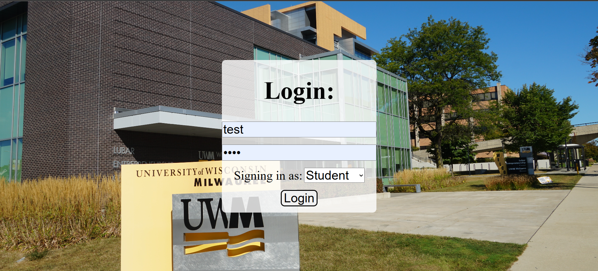

Course Enrollment System
Django
Python
HTML/CSS

Try on GitHub
In my Intro to Software Engineering, I worked in a team of 4 to create a web application using Django, HTML, and CSS that enabled for professors, students, and administrators to manage course enrollments and other various tasks such enrollment requests and available course based on their respective view. We followed the SCRUM methodology to ensure collaboration and timely completion of work. I was tasked with completing Administrator view, assisted in developing the Student and Professor view and led the unit testing and acceptance testing for the project. We worked on this project for 4 weeks and presented during the final exam week of the Spring 2025 semester. I help lead the live technical demonstration of our project during presentations.